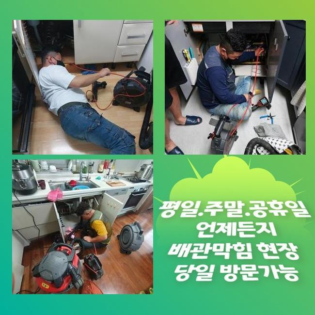
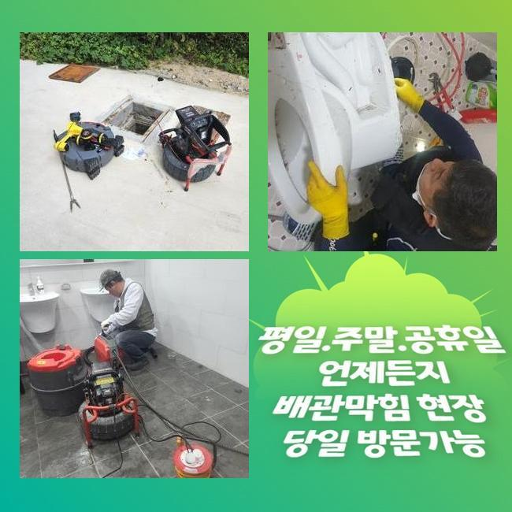
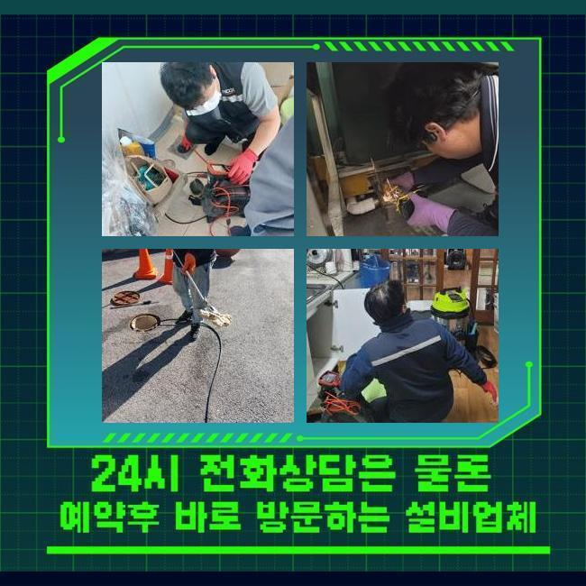
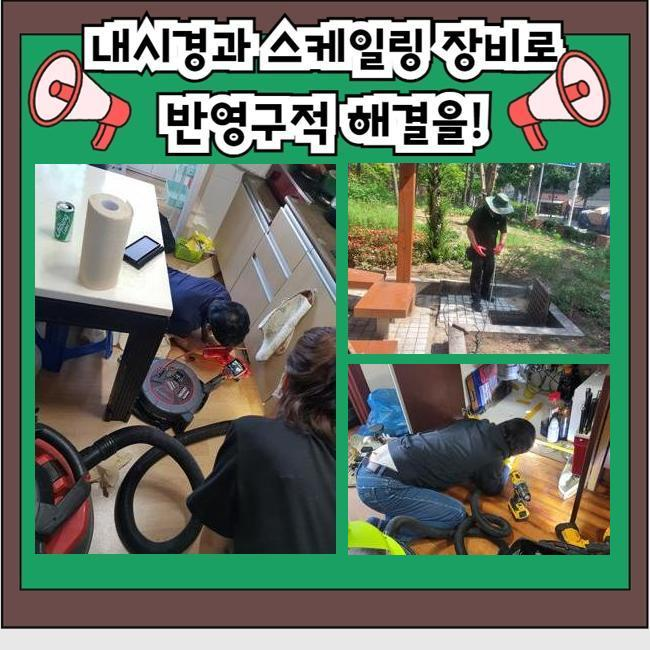
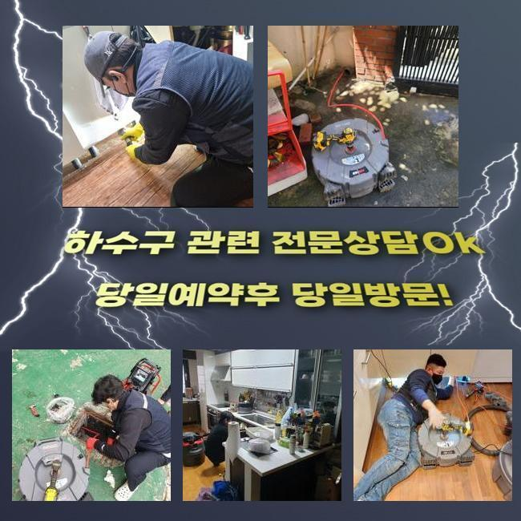
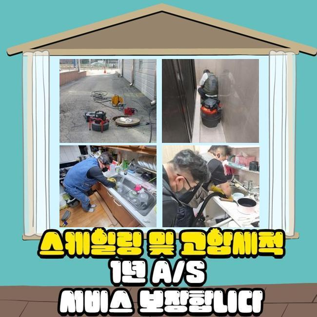
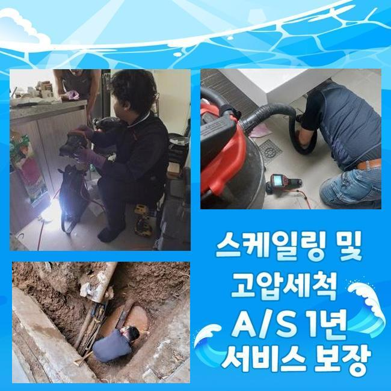

🏠 성북구 정릉동대변기막힘 장위동 집수정청소 누수
용인 변기막힘 전문 시공 후기

📋 작업 개요
- 위치: 용인
- 서비스 유형: 변기막힘, 배관막힘, 집수정막힘, 누수수리, 역류해결, 배관청소, 설비공사
- 작업 일시: 2025. 5. 10. 14:00
- 업체명: 하수구수사대 (010-5615-2118)
🔍 문제 상황
성북구 정릉동대변기막힘 장위동 집수정청소 누수
공동 주택의 배수라인을 관리하지 않고 사용하시면 이물질이 계속해서 쌓여 배수라인의 이상이 나타날 경우가 많아져요
현재 사용하시는 하수설비의 사용년수가 오래 되셨다면 전문업체에 의뢰하셔서 하수설비의 이상을 확인하시는 것을 추천합니다
점심쯤이 지나서 고객분께서 배수라인이 막혀 역류가 발생한다고 전화주셨어요
이번 현장은 마을과 거리가 꽤 되는 외딴 곳의 다가구주택으로 집근처에 규모있는 캠핑장도 영업을 하는 상황이였어요
집을 지은지 몇 년 되지도 않았는데 건물 바깥쪽에서 역류사고가 자꾸 발생한다고 말씀 해주셨어요
확인해본 결과로는 창고안에 설치된 집수정이 외부에 있는 정화조로 유입시키는 상황이였어요
정화조의 위치가 멀었기때문에 창고쪽에 설치를 할 수 밖에 없었다고 하시더라구요
고객님께 막힌부위를 찾아내도 점검구가 보이지 않는다면 좀 더 시간이 많이 걸린다고 안내 해드렸고 동의를 해주셨습니다
집수정쪽에서 내시경장비를 진입시켰으나 침전물이 꽉 막혀있어서 진행방향으로 카메라가 들어가지 못했어요

🔎 원인 분석
💡 전문가 진단: 정밀 진단 장비를 사용하여 슬러지의 고착 여부를 판명하고 타격/세척 작업을 실시했습니다.
슬러지가 가득하게 차있는걸 사례자님께도 보여드리며 설명 해드렸어요
샤프트장비로 작업을 이어나갑니다
기계의 체인부분에 머리카락 외에도 물티슈등이 끝도없이 엉켜서 빠져나왔어요
다세대주택의 역류를 발생시키는 막힘요소는 머리카락이나 물티슈등이 흔하게 나와요
의뢰인님께 이러한 이물질은 거름망을 통해 버리시라고 안내 해드렸습니다
물티슈같은 것은 화학적인 성분으로 종이로 만든게 아닌 플라스틱의 형질이므로 물과 만나 녹는게 아니예요
요새 물에 녹는 물티슈도 있다고는 하지만 많은 양을 한번에 쓰는 경우 배수라인이 막히게 되면서 결국엔 역류하는 상황이 발생합니다
하수라인 안에 있던 불순물과 같이 덩어리지면서 막히게 됩니다
사용시 주의하여 물티슈같은 오염물질을 따로 버리는 습관을 가져야해요
하수시설은 하수만을 다루는 시설인 것을 잊지말고 주의해주시고 이물질등은 분리하여 배출해주세요

🔧 작업 과정
다음엔 창고로 이동하여 내시경 작업을 이어갑니다
배수라인이 길게 매립되어 있어 내시경기로 끝부분까지 들어갈 수가 없어서 쏜드기기를 사용했어요
막힘이 추정되는 부위에 계속 슬러지 제거작업을 이어나갔습니다
집수정과 동일하게 머리카락 외에도 물티슈가 계속 나오는 것을 보고 사례자님께서도 중대한 상황이라는걸 인지하신 것 같았어요
저희들에게 동일한 문제가 일어나지 않는 방법을 자세하게 물어보셔서 안내 해드렸어요
대부분은 일상에서 쉽게 이물질들이 흘러가거나 물에 녹을 것이라고 하시지만 배관의 경사도에 따라서 내부에 노폐물도 있어서 작은 쓰레기나 음식기름등을 따로 배출해서 버려야합니다
내시경장비를 재투입하여 오염물질이 깨끗하게 나왔는지 확인했습니다
정화조에서 시작하여 집수정까지 양쪽에서 체크를 하였고 찌꺼기 하나 없이 깨끗해진 배수관이 확인되어 작업을 마무리 했습니다
의뢰인에게도 보여드렸더니 만족해하셨습니다
일반적으로 염산등을 부으면 어렵지 않게 막힌걸 내려보낸다고 알고있는 분들도 있지만 그건 매우 위험합니다
의뢰인께서 하수시설을 사용할때 찌꺼기를 흘려보내지 말고 집의 사용년수가 오래 되셨다면 미리 전문진을 통하여 예방검진을 진행하셔야 해요
그냥 방치하시면 역류사고가 발생되면서 대규모 공사를 하게되어 비용적인 부담이 커지게 됩니다
어떤일도 마차가지로 하수설비의 이상을 작은 문제로 여기시면 금액적인 의뢰인께서 책임져야 하는 부분이 커지는 것을 기억해주시길 바랍니다
작업이 끝난 후에 최종적으로 점검하며 청소까지 완료했어요
오래된 이물질들로 지독한 냄새가 나서 특수한 세제를 도포하고 수전에 호수를 이어서 작업지 주변까지 모두 청소했어요
기본적으로 주변까지 저희 전문가들이 청소 해드리는 경우는 많지 않아요


✅ 작업 완료
작업한 현장은 오염의 정도가 너무 심한 편이라서 저희도 그냥 마무리 지을 수가 없었습니다
저희는 하수라인의 물티슈등은 물론이고 하수설비 내부의 불순물을 제거하고 오수의 흐름이 제대로 되는 상황까지 마무리 점검을 반드시 합니다
사례자님께서 저희를 믿어주시길 바라며 관련된 문제를 상세히 상담 받고자 하시다면 언제든 전화주세요
하수관 막힘문제를 더 나은 방식으로 해결하시려면 최대한 신속한 대응법이 베스트임을 잊지마시고 주의하셔야 합니다
일상에서 지금과 같은 하수시설의 문제점이 발생하지 않아야 하지만 문제가 의심된다면 최대한 빠르게 전문적인 업체에 문의하시길 바랍니다




⚠️ 베란다 누수 및 방수 관리 방법
- ✅ 비가 많이 올 때 창틀 주변이나 아래층 천장에 얼룩이 생기는지 정기적으로 확인해 보세요.
- ✅ 우수관 주변 실리콘 마감이 들뜨거나 깨진 틈새가 있는지 손상 여부를 수시로 체크하세요.
- ✅ 베란다 바닥 타일의 줄눈(메지)이 소실되면 그 틈으로 물이 침투하여 누수가 유발됩니다.
- ✅ 누수 의심 증상 발견 시 방치하면 아래층 손실이 커지므로 즉시 전문가의 진단을 받으십시오.
💡 핵심 정리
- 확실한 장비 작업(내시경 점검 및 샤프트 스케일링)으로 원인을 뿌리 뽑습니다.
- 작업 후 1년 이내에 동일한 부위 재발 시 100% 무상 A/S 서비스를 보장합니다.
- 서울 · 경기 · 인천 전 지역에 24시간 언제든 긴급 출동할 수 있도록 항시 대기 중입니다.
❓ 자주 묻는 질문 (FAQ)
🚨 용인 변기막힘 문제로 고민이신가요?
정확한 원인 진단과 확실한 시공으로 재발 없는 해결을 약속드립니다.
24시간 긴급 출동 | 서울 · 경기 · 인천 전지역 | 1년 내 재발 시 무상 A/S